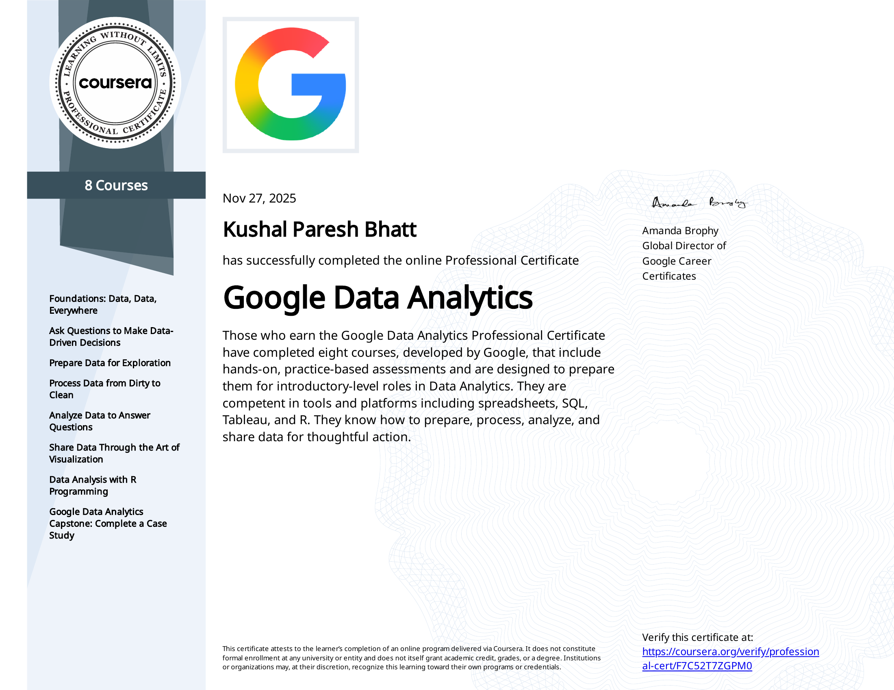
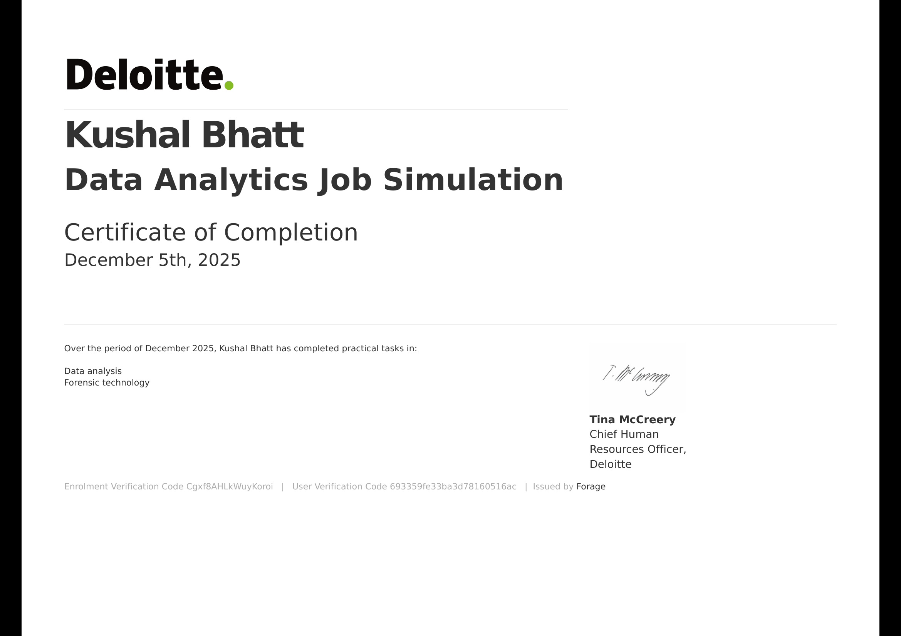
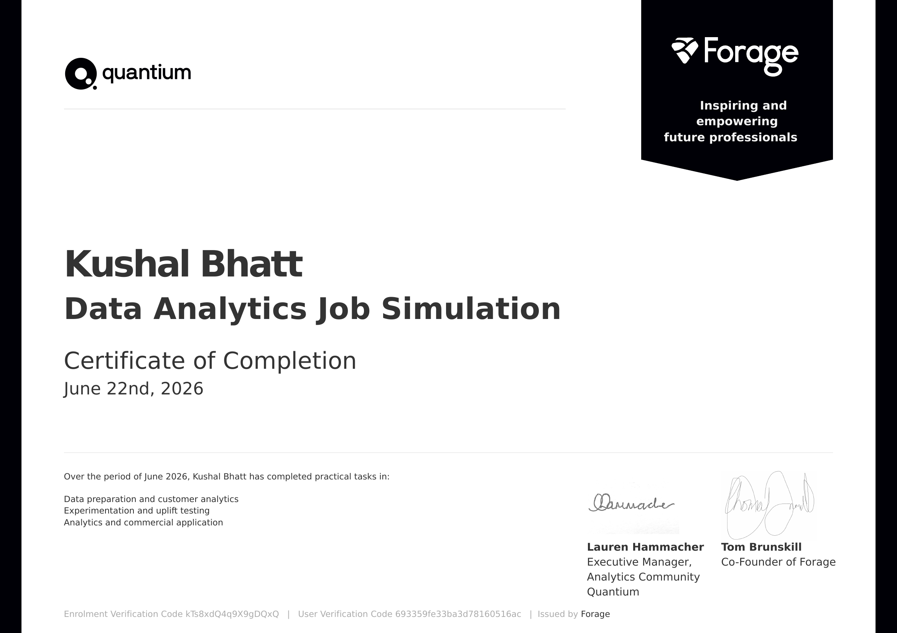
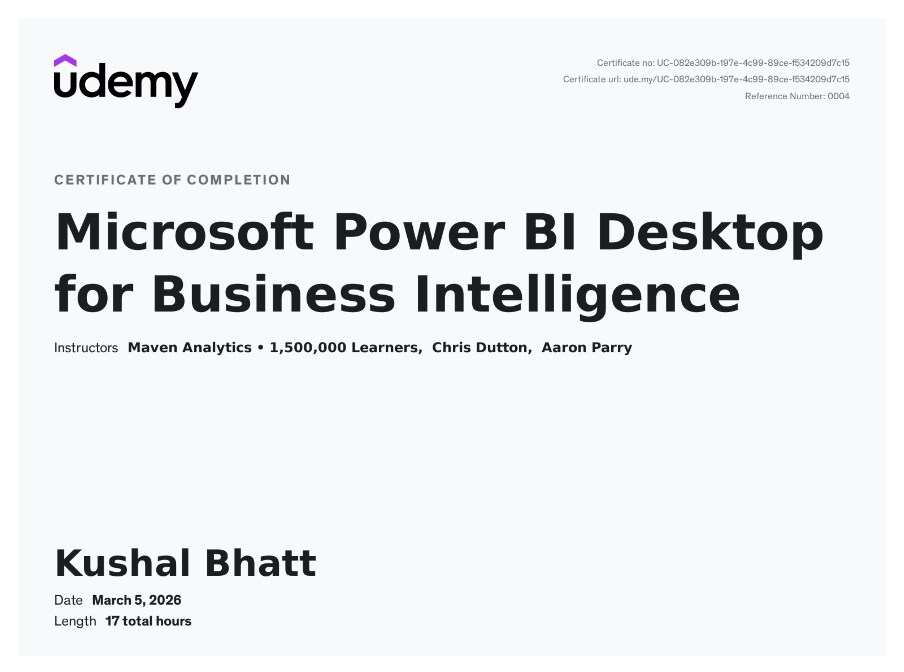

Data Analysis
Exploratory analysis, statistical reasoning and decision-ready insights across finance, healthcare and CRM data.
Applied to CALHN elective-surgery prioritisation across ~7,500 patients.Data Analyst · BI Developer · Reporting Analyst
I turn raw data into clear decisions by building Power BI dashboards, SQL-driven reporting and analytical models that teams can use across finance, healthcare and public-sector work.

I'm a final-year Master of Data Science candidate at Adelaide University (graduating December 2026), with a Bachelor of Computer Science and Engineering from India. Before starting my Master's, I spent two years working across finance, e-commerce, and CRM analytics in India, reconciling financial records, investigating data discrepancies, and building churn analysis reporting for CRM platforms including HubSpot.
Since beginning my Master's, I've focused on building on that operational analyst foundation to develop full data science capability by designing SQL and Python pipelines, building Power BI and Tableau dashboards, and developing predictive models. I'm currently working with the Central Adelaide Local Health Network (CALHN) on a real-world elective surgery scheduling model, applying data science to a genuine operational challenge in the healthcare sector.
I specialise in turning complex datasets into clear, actionable insights using Power BI, SQL, Excel, Python, and R, and I'm particularly interested in roles across finance, banking, healthcare, and government/public sector, where I can combine analytical rigour with real operational impact. I believe in continuous learning, staying hands-on with evolving technologies, and working closely with stakeholders to make sure the insights I deliver actually get used.
Core capabilities supported by hands-on work in analytics, business intelligence, reporting and data preparation.
Exploratory analysis, statistical reasoning and decision-ready insights across finance, healthcare and CRM data.
Applied to CALHN elective-surgery prioritisation across ~7,500 patients.Power BI dashboards built around business questions, KPIs, dimensional models and stakeholder reporting needs.
Built reporting covering $49.11M in sales and $8.63M in profit.SQL-based cleaning, transformation and ETL/ELT workflows designed to make reporting more reliable.
Hands-on with SQL Server, PostgreSQL, MySQL, CTEs and window functions.Financial reconciliation, CRM reporting and stakeholder communication focused on operational decisions.
Experience translating client requirements into practical reporting outputs.Applied analytics experience across healthcare, finance, e-commerce and CRM environments.
Central Adelaide Local Health Network (CALHN) · Adelaide, Australia
Patterns LLC · Vadodara, India
Dominattor · Vadodara, India
Projects demonstrating how I use data to solve business, reporting and operational challenges.

Elective-surgery scheduling and patient-prioritisation modelling supporting approximately 7,500 patients.
Working with real healthcare requirements to validate scheduling logic, patient-priority rules and operational decision-making.

Interactive executive reporting covering $49.11M in sales and $8.63M in profit.
Built a star-schema reporting solution to replace fragmented static reports with clear sales, profitability and discount insights.
View Project →
Global analysis of data-role demand, salaries and geographic hiring patterns.
Analysed 478.9K job postings, role demand and salary benchmarks through an interactive global Power BI dashboard.
View Project →Adelaide University
Jan 2025 - Dec 2026 (Expected)
Focus areas: Data Modelling, Machine Learning, Statistical Analysis, Predictive Analytics and Generative AI.
Gujarat Technological University, India
Apr 2019 - Feb 2023
Built a foundation in programming, databases, software development and computer science before specialising further in data analytics and data science.
Supporting academic-integrity education, student engagement and university initiatives.
Supporting new students through peer connection, orientation and access to university resources.
Supported student orientation through event coordination, campus tours and transition support.
View Recognition Certificate →Recognised for contributions as an Academic Student Representative.
View Award Certificate →Selected credentials demonstrating continued development across data analytics and business intelligence.


Dec 2025
View Credential ↗

I’m open to Data Analyst, BI Developer, Reporting Analyst and Data Engineering opportunities across Australia.
If you’d like to discuss an opportunity, collaboration or data project, feel free to reach out.
Download Resume